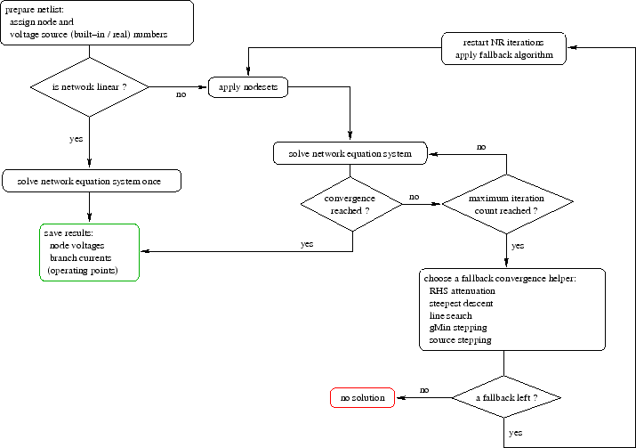

In this section an overall solution algorithm for a DC analysis for
linear as well as non-linear networks is given. With non-linear
network elements at hand the Newton-Raphson (NR) algorithm is applied.
Figure 3.7:
DC solution algorithm flow chart
|

|
The algorithm shown in fig. 3.7 has been proved to be
able to find DC solutions for a large variety of networks. It must be
said that the application of any of the fallback convergence helpers
indicates a nearly or definitely singular equation system
(e.g. floating nodes or overdetermining sources). The convergence
problems are either due to an apparently ``wrong'' network topology or
to the model implementation of non-linear components. For some of the
problems also refer to the facts mentioned in section 15.2
on page ![[*]](crossref.png) . In some cases it may even occur that
tiny numerical inaccuracies lead to non-convergences whereas the
choice of a more accurate (but probably slower) equation system solver
can help. With network topologies having more than a single stable
solution (e.g. bistable flip-flops) it is recommended to apply
nodesets, i.e. forcing the Newton-Raphson iteration into a certain
direction by initial values.
. In some cases it may even occur that
tiny numerical inaccuracies lead to non-convergences whereas the
choice of a more accurate (but probably slower) equation system solver
can help. With network topologies having more than a single stable
solution (e.g. bistable flip-flops) it is recommended to apply
nodesets, i.e. forcing the Newton-Raphson iteration into a certain
direction by initial values.
When having problems to get a circuit have its DC solution the
following actions can be taken to solve these problems.
- check circuit topology (e.g. floating nodes or overdetermining sources)
- check model parameters of non-linear components
- apply nodesets
- choose a more accurate equation system solver
- relax the convergence tolerances if possible
- increase the maximum iteration count
- choose the prefered fallback algorithm
The presented concepts are common to most circuit simulators each
having to face the mentioned aspects. And probably facing it in a
different manner with more or less big differences in their
implementation details especially regarding the (fallback) convergence
helpers. None of the algorithms based on Newton-Raphson ensures
global convergence, thus very few documents have been published either
for the complexity of the topic or for uncertainties in the detailed
implementation each carrying the attribute ``can help'' or ``may
help''.
So for now the application of a circuit simulator to find the DC
solution of a given network sometimes keeps being a task for people
knowing what they want to achieve and what they can roughly expect.
This document was generated by Stefan Jahn on 2007-12-30 using latex2html.